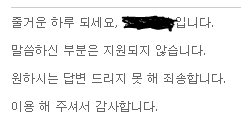
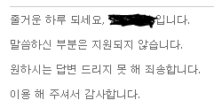

정신을 차려보니 OO가 되어 있었다.
31/05/2016
어쩌다보니 언제부터인가 여기에는 어느 정도 길이가 있는 글들을 쓰고 있다.
문제는 내 인생이 그렇게 버라이어티하지도 스펙타클하지도 않기 때문에 길게 쓸 건덕지가 있는 일이 가뭄에 콩 나듯 한다는 점이다.
그러다보니 자연스럽게 업데이트 자체가 잘 되지 않고 있았고 이왕 유지를 하는 김에 어떻게 좀 더 손 볼 방법이 있을까 깊게 약 3초 고민한 결과, 요즘 대세 인스타그램에 짧은 이야기를 올리고 그 사진을 메인에 보여주자 라고 결심했다.
멋진 기획이 완성되면 이제 삽질의 고통이 시작되는 건 고조선 이래의 정석이라 먼저 정석대로 인스타그램 API 문서 부터 읽기 시작했다. 그리고 시킨 대로 순순히 사용자 토큰을 받아내기까지 성공했다.
그런 다음 정작 데이터를 받아오는 API를 부르려는 순간, 이 호출이 HTTPS 로만 가능한 것을 발견했다.
뭐 SSL 소켓 하나 열지 뭐 라고 쿨하게 생각하고 꾸역 꾸역 코드를 만들었는데 동작시켜 보니 perl ssl 모듈이 설치가 되어 있지 않았다는 메시지와 함께 종료되었다.
바로 공손히 호스팅 업체에 고객 문의로 "cpan 으로 module 하나만 설치해주세요 굽신굽신" 을 시전하였으나

싸구려 손님이라 그런지 바로 문전 박대.jpg 깨알같은 줄거운 의 압박, 못 해, 이용 해
문제는 내 인생이 그렇게 버라이어티하지도 스펙타클하지도 않기 때문에 길게 쓸 건덕지가 있는 일이 가뭄에 콩 나듯 한다는 점이다.
그러다보니 자연스럽게 업데이트 자체가 잘 되지 않고 있았고 이왕 유지를 하는 김에 어떻게 좀 더 손 볼 방법이 있을까 깊게 약 3초 고민한 결과, 요즘 대세 인스타그램에 짧은 이야기를 올리고 그 사진을 메인에 보여주자 라고 결심했다.
멋진 기획이 완성되면 이제 삽질의 고통이 시작되는 건 고조선 이래의 정석이라 먼저 정석대로 인스타그램 API 문서 부터 읽기 시작했다. 그리고 시킨 대로 순순히 사용자 토큰을 받아내기까지 성공했다.
그런 다음 정작 데이터를 받아오는 API를 부르려는 순간, 이 호출이 HTTPS 로만 가능한 것을 발견했다.
뭐 SSL 소켓 하나 열지 뭐 라고 쿨하게 생각하고 꾸역 꾸역 코드를 만들었는데 동작시켜 보니 perl ssl 모듈이 설치가 되어 있지 않았다는 메시지와 함께 종료되었다.
바로 공손히 호스팅 업체에 고객 문의로 "cpan 으로 module 하나만 설치해주세요 굽신굽신" 을 시전하였으나

싸구려 손님이라 그런지 바로 문전 박대.jpg 깨알같은 줄거운 의 압박, 못 해, 이용 해
아, SSH 로 호스팅 서버에 접근하니까 분명 이미 SSH 라이브러리는 깔려 있을테고 그냥
root# cpan install SSL
로 perl 에서 접근할 수 있도록 한 줄만 쳐 주면 될 것 같은데.
입맛을 다시다 왠지 아쉬워 호스팅 업체의 서비스 문구를 살펴보다 php 제공 이란 문구에 눈이 번쩍 뜨였다.
호옥시 PHP 로는 접근 가능할 것 같다는 느낌이 온다. 결과는?
호옥시 PHP 로는 접근 가능할 것 같다는 느낌이 온다. 결과는?
정리하자면 instagram HTTPS API는 php 에서 호출하도록 하고 perl cgi로는 이 php를 부르도록 해서 데이터를 얻어오게 했다.
룰루랄라 대충 코드를 만든 다음 실제 내용을 빼내 보니 어럽쇼 instagram API 결과값이 JSON 타입인 것을 그제서야 발견했다.
룰루랄라 대충 코드를 만든 다음 실제 내용을 빼내 보니 어럽쇼 instagram API 결과값이 JSON 타입인 것을 그제서야 발견했다.
이게 왜 또 문제인가 하니 json 파싱 모듈이 perl 기본 모듈에 포함되어 있지 않아 설치가 필요하기 때문이다.
이렇게 되니 할 수 있는 방법은 아래와 같은 선택지로 모아졌다.
이렇게 되니 할 수 있는 방법은 아래와 같은 선택지로 모아졌다.
- 호스팅 업체의 자비를 다시 빌어 본다. - SSL 모듈도 설치 안 해 줬는데?
- 다시금 PHP에서 json 파싱이 가능한 방법을 찾아보자 - 아니, PHP에 더 발 담그고 싶지는 않은데?
- 일본을 공격한다 - JSON 파서가 없어? 그러면 직접 만든다! 고만해 미친놈아
- 결국 선택은 왠지 요즘 정신이 좀 나간 상태이긴 하다만 json parser 를 만들어보자 가 되었고 그 결과물이 Json.pm 이다.
대충 만든 것이라 사용법이 좀 괴랄하지만 어찌 동작은 하는 것 같다.
#!/usr/bin/perl
use strict;
use warnings;
use lib "../lib";
use Volken::Json;
my $json = Volken::Json->new;
$json->load_file("data.json");
my $init_node = $json->parse;
my @data = $init_node
->get("data")
->gets();
foreach (@data){
printf "%s\n", $_->get("images")
->get("standard_resolution")
->get("url")
->value;
}
실은 아직 하나 더 문제가 남아있다.
API 결과 중 한글 문자열이 \u 포맷의 유니코드로 변환되어 오는데 이미 덕력이 다했는지 갑자기 급 피곤해져서 훗날을 기약하기로 한다.
API 결과 중 한글 문자열이 \u 포맷의 유니코드로 변환되어 오는데 이미 덕력이 다했는지 갑자기 급 피곤해져서 훗날을 기약하기로 한다.